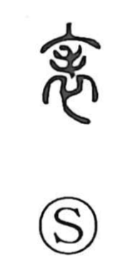

表

Uncategorized
Kun: omote, arawasu, arawareru | On: hyo
surface ・ front ・ to express ・ to appear ・ sign ・ chart
Explanation
This character is a compound of 衣, garment, and 毛, hair. It evokes a furred leather coat (裘) with the hair worn on the outside: the hairy side is the outward face, while the smooth side is the back. From this image it first means the outer surface or front, and by extension comes to mean to show or make manifest, and to appear. The Shuowen glosses it as an upper garment and notes that in antiquity the hair side was the 表, the outward face. In compounds such as 表識 it also carries the sense of a mark or sign.